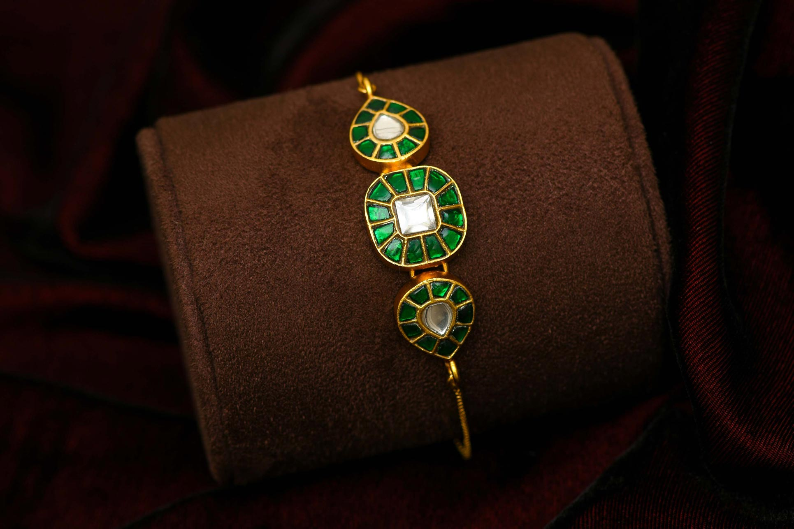
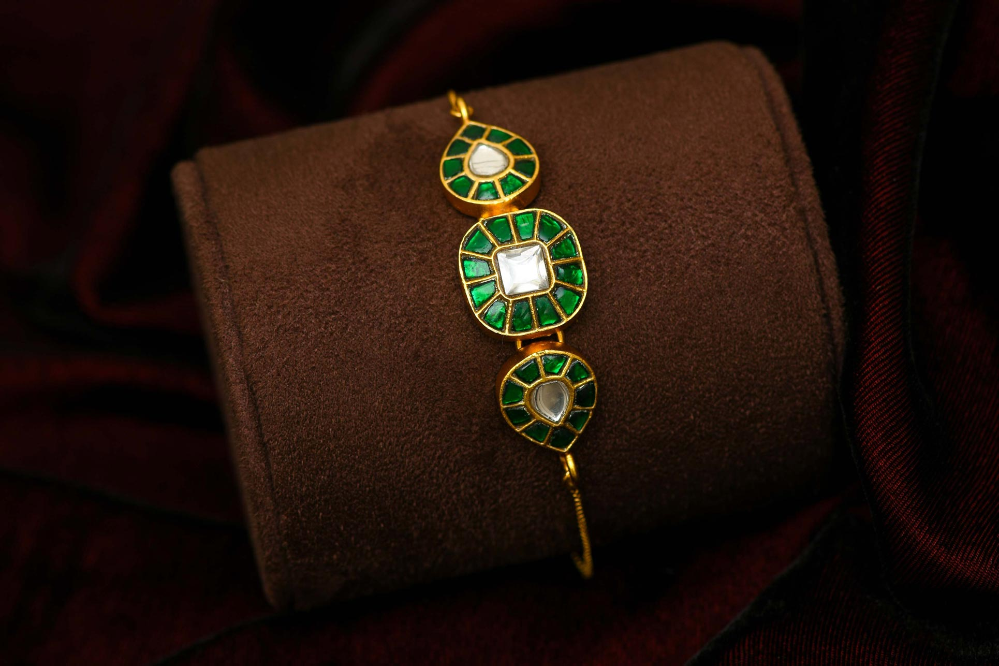
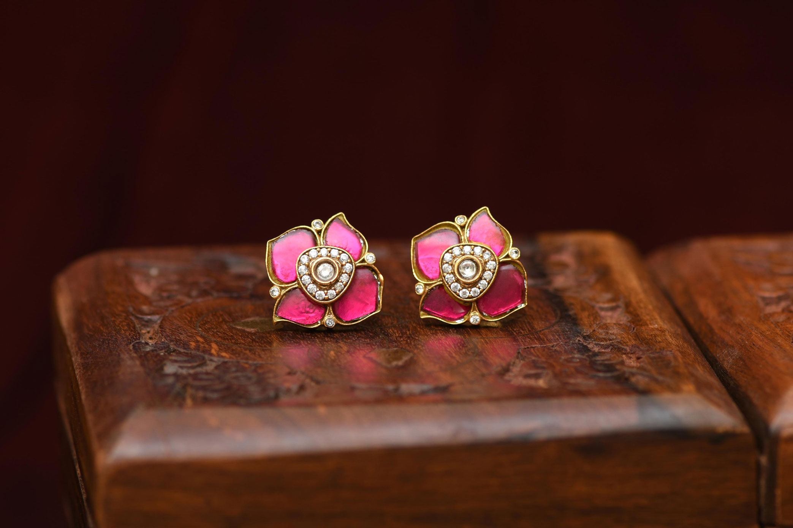
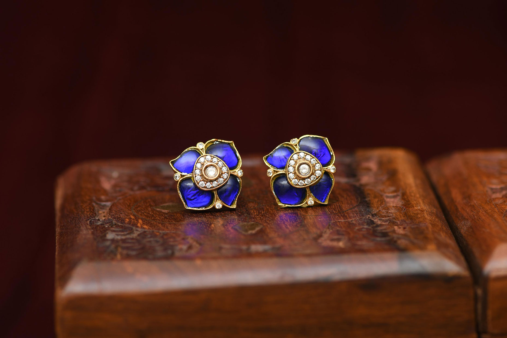
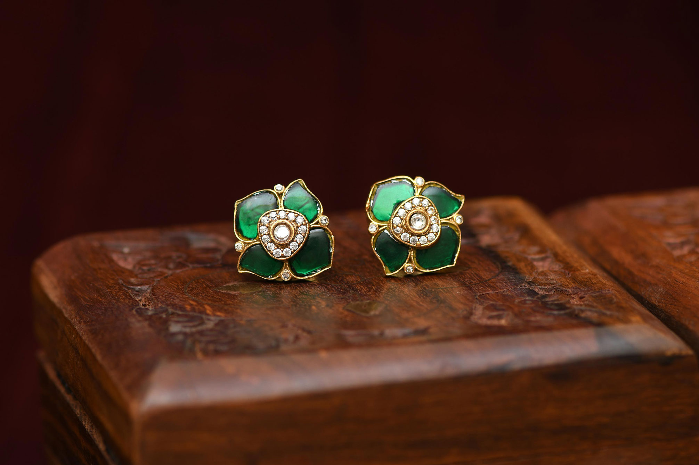

Jewellery Photography Setup: Materials & Mood
Jewellery photography demands more than just a good camera — it requires careful attention to details, styling, lighting, storytelling, and the right gear. As a commercial product photographer based in Tamil Nadu, I focus on creating visuals that highlight a piece’s elegance and detail. For this project, I explored multiple setups for gold bracelets and earrings to bring out their design and character, using a Nikon D850 paired with a 105mm f/2.8 macro lens to capture intricate textures and fine craftsmanship with clarity.
Bracelet Styling for Premium Product Shoots
For the bracelet, I chose a maroon velvet cloth as the background to give a soft, silky feel. I placed the bracelet on a maroon-colored pillow bangle cushion to match the theme. The dark setting was intentional — it helps to draw attention to the jewellery itself, without distracting elements around it.
 

Earstud Composition with Velvet baground & textered wooden box
For the Earstuds, I used the same maroon velvet cloth as the background but placed a pair of colorful Earstuds on a brown jewellery box. The textured background combined with rich tones helps stone colors pop beautifully. This setup was styled to give a regal, moody look while still keeping the focus on the jewellery.
  Shot at a boutique in Chennai, this jewellery product catalogue project highlights how thoughtful surfaces like velvet and a soft lighting setup can create a premium, moody look while emphasizing colour, texture, and craftsmanship. The controlled lighting helped maintain highlights on the stones and edges of the jewellery, ensuring an elegant feel with minimal distractions — allowing each piece to truly shine through the frame.
Want to see more jewellery photography projects? Checkout my portfolio for rings, necklaces, and bridal sets shot in Chennai and beyond.